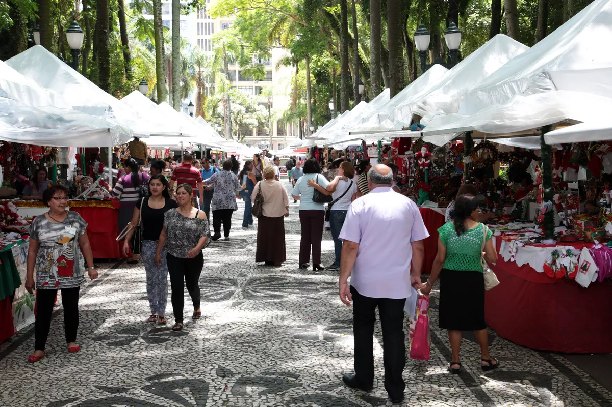
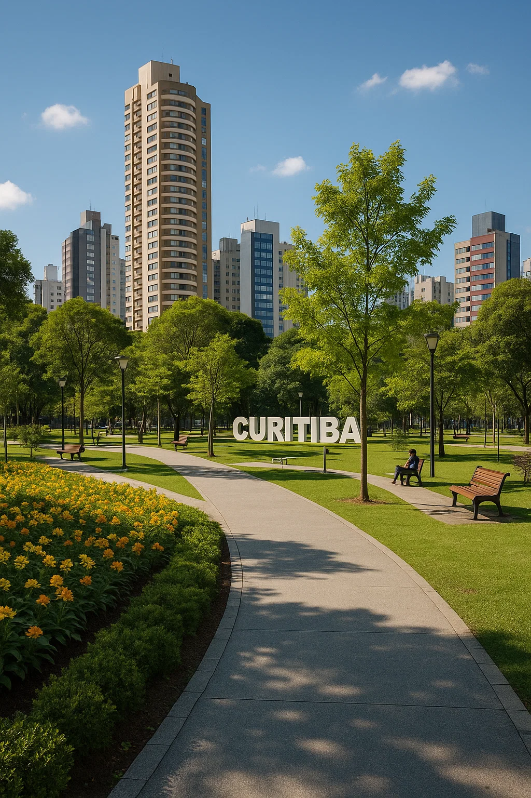
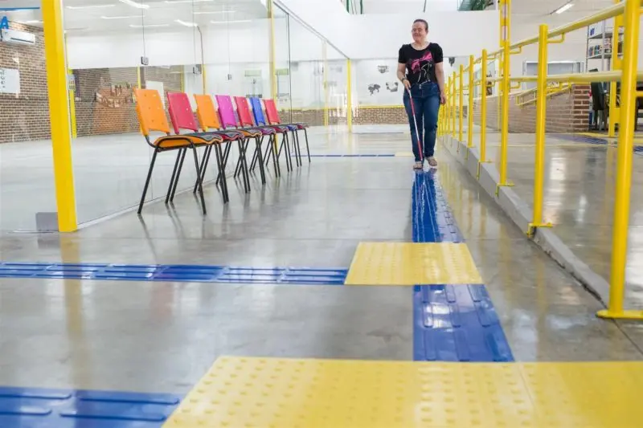

Feiras do Campo no Centro
Proposta de feiras semanais com produtores locais no centro histórico.
Feira de Natal de Curitiba vai até dia 23 de dezembro. — Foto: Jaelson Lucas/SMCS
Criação de Parques Urbanos
Espaços verdes conectando a cidade ao campo: ar puro e convívio social.
copyright chat gpt IMG
Acessibilidade Urbana
Calçadas planas, rampas, sinalização e espaços com alto contraste para inclusão.
Fonte: Projeto Batente e ELO
Mapa com Pontos de Melhoria no Centro de Curitiba
Veja abaixo os locais onde sugerimos melhorias urbanas, como áreas verdes, iluminação e acessibilidade.
Visitantes desta página
Você é o visitante número: 0